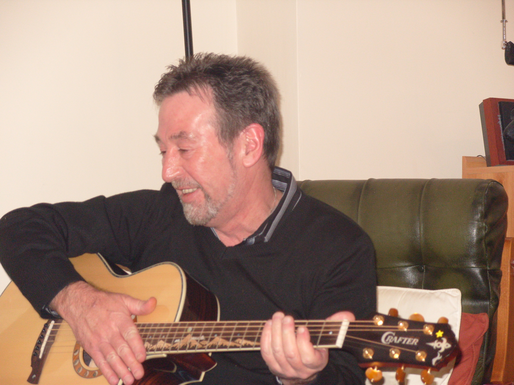

Graham playing his guitar
Graham was a father and grandfather from Aberdare, and was a passionate music lover. He was also a published poet, with one of his poems being displayed on the valleys line rail network.
Graham was a founding member of The Last Friday Club and Cwmaman Music Festival, and was credited with being the 'lyrical mentor' to the Stereophonic's singer / songwriter Kelly Jones.